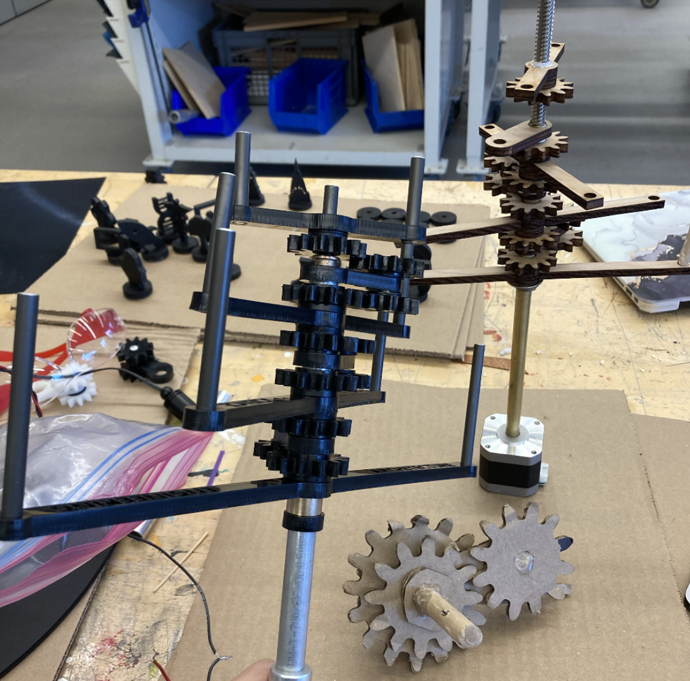
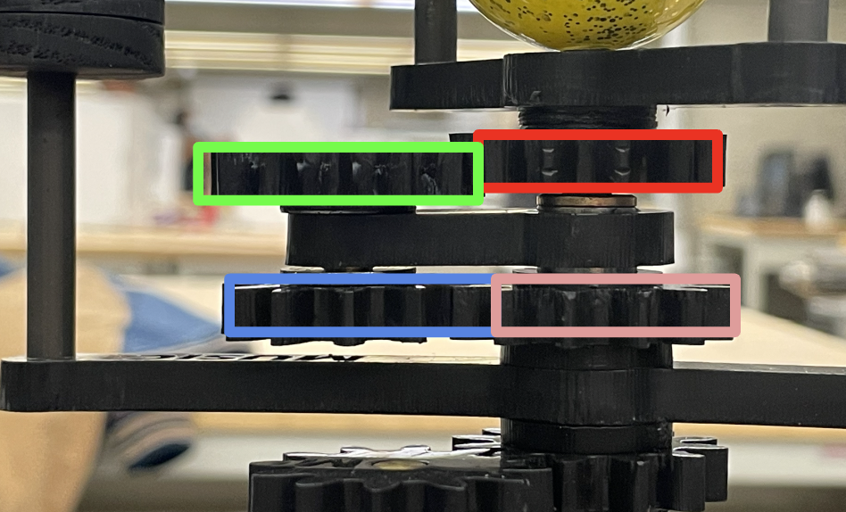
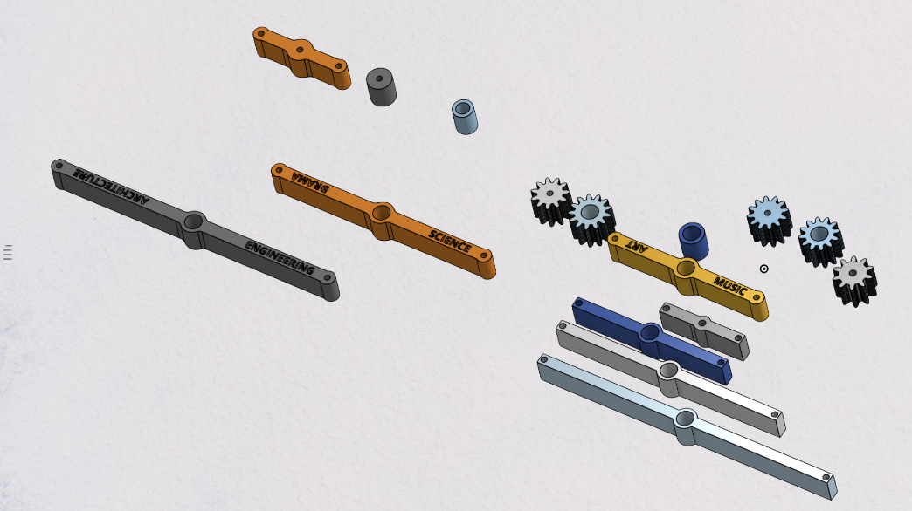
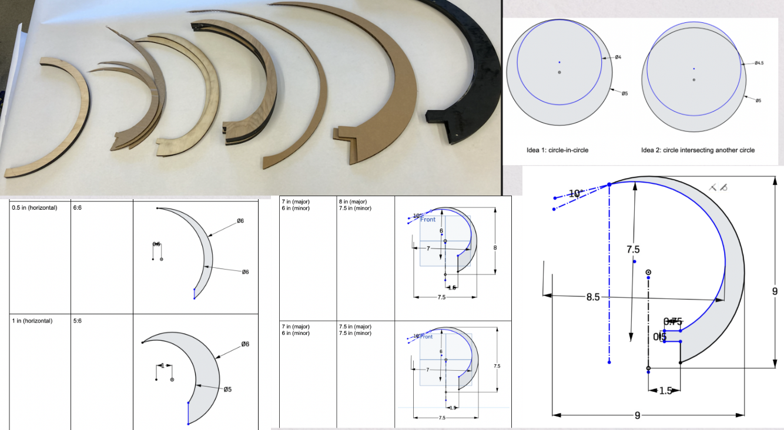
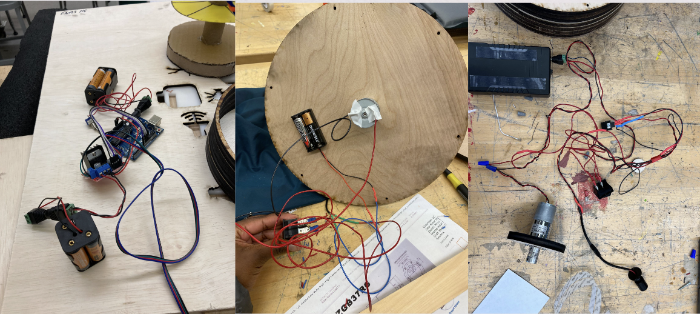
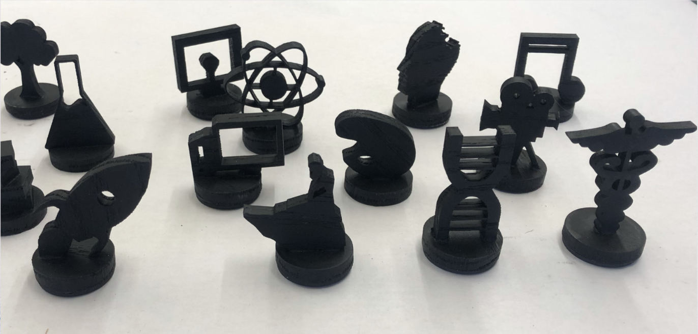
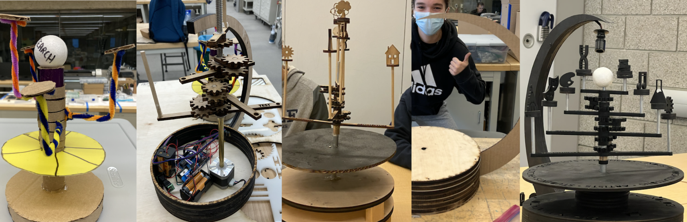

Geared Orrery
For a class final project in fall of 2021, three other students and I designed and built an orrery-inspired display for the Yale Center for Collaborative Arts & Media (CCAM). Notice how the light casts shadows through each arm.
Concept
CCAM tasked us with creating a display that wholly represented the breadth and diversity of the disciplines that CCAM supports. They also wanted it to show how CCAM facilitates the intertwinement of all of these disciplines. Our solution was an orrery inspired model that represents how different types of people (artists, musicians, engineers, etc), represented by the cutouts in the arms, move fluidly throughout different disciplines at CCAM, represented by the figurine 'planets.'
Gears
Using 6 pairs of gears, each with an 11/13 ratio, we were able to make each of the 4 arms spin at slightly different speeds. These gears were first tested with cardboard, then tried with wood, and we decided upon Delrin for its precision and low friction. I personally designed and manufactured this gear train.



Components
We decided to use a mathematical model to create the shape of our main arm, for a natural, crescent-like form. All of the electronics were wired from scratch. Our planet-like figures were mounted magnetically to the arms, so these discipline figures could be mixed and matched on the model.



Prototypes
